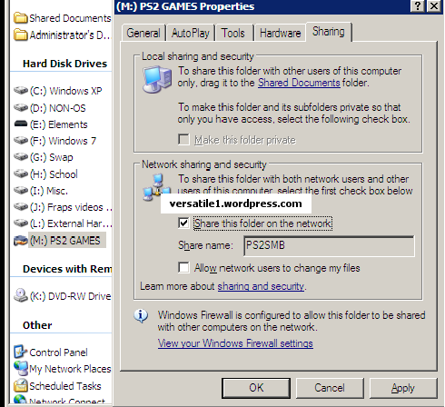
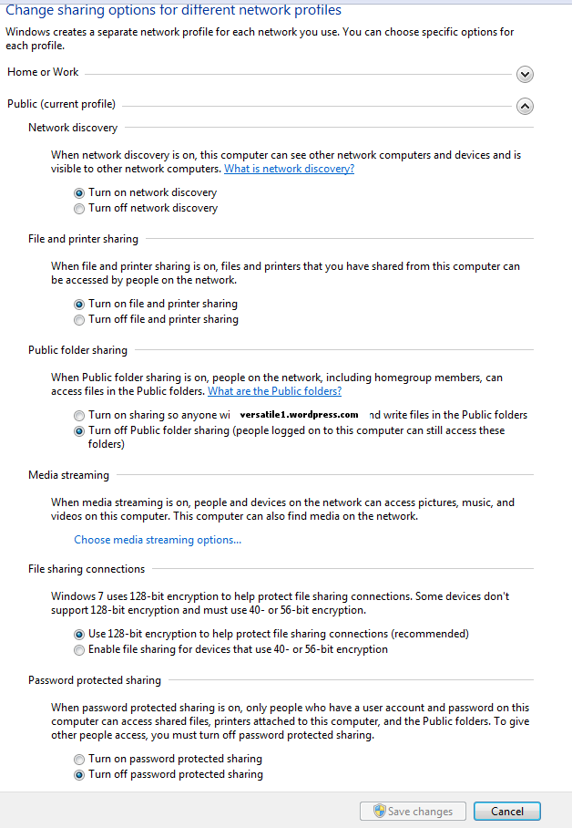

How to share PS2SMB folder over the network and set permissions for access¶
Windows XP :¶
Enable file sharing :
Simple File Sharing is on by default , so most likely you have SMB enabled, but if you don’t or don’t wish to enable it, you can enable the Guest Account to connect to the SMB share.
Setting a Sharename :
2. Right click on the folder you want to share (or Partition drive), and go to “Sharing and Security” (sharing a drive will prompt a warning first about the risks of sharing it over a network).
3. In Network Sharing and Security, place a mark in the box for “Share this folder on the network”, then give the “Share Name” the name PS2SMB (default name) – or any name you want, but it must match into OPL network configuration. Place also a mark in the box for “Allow network users to change my files”.
Windows Vista :¶
Seriously, is someone still using Vista ? :P
Windows 7 :¶
Sharing your PS2 folder :
Setting a share name :

Setting your network profile :
7. Now click on “Network and Sharing Center”(blue link as shown in the picture above). Under the Public profile, please configure it as shown in the screenshot below :
Windows 8 :¶
Very similar to Windows 7 method. See here.
Windows 10 :¶
(to be completed)
Mac OS X :¶
3. In the list of services on the left side of the window, go to the “File Sharing” item and click on the “Options…” button.
4. Enable the “Share files and folders using SMB” option and click on the “Done” button.
5. Add the folder you want to share (ie. PS2SMB) to the “Shared Folders” list by dragging and dropping it in the “Shared Folders” list and check that “Everyone” has at least “Read Only” rights to this folder in the “Users” list.
Your folder should be shared over SMB.